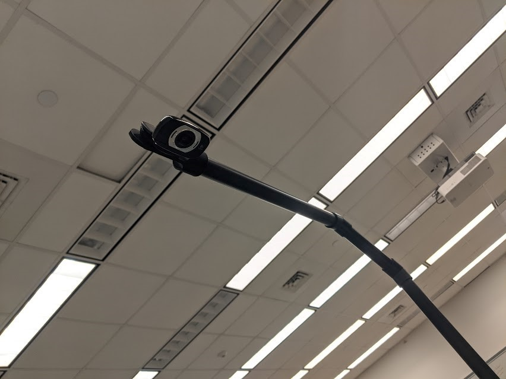

Camera Mount
To accurately detect the positions of blocks, a camera must be positioned exactly above the center of the base board. The main segments of the camera mount are ¾” schedule 40 PVC pipe, and 3D printed parts connect the camera to the pipe and the pipe to the base board. The entire mount is painted black, and the camera cable runs within the tube for a clean appearance.
